About
Imprimereとは？
イタリア語で「刻む」という意味。英語の「impress」とほぼ同じ意味の言葉です。 お客様の心に刻み込む演奏を、そして自分たちの足跡を演奏という形で残していきたいと考えて名づけました。
関西高専合同演奏会
メンバーのほぼ全員が、関西高専合同演奏会(通称:合演)という関西に所在する7つの高専が行う演奏会で知り合った仲間です。 第33回合演にて実行委員長と指揮者を務めた松浦と、団長である辻を中心にこの楽団は創られました。 
活動について
現在、活動のレギュラー化は目指しておりますが、メンバーや練習場所は不定期で活動しております。 練習場所や打楽器等は高専の吹奏楽部からお借りしております。
Member
役員紹介
団長 ： 辻 政慶
奈良工業高等専門学校 平成23年卒業中学までクラシック音楽とは無縁な生活を送っていましたが、 高等専門学校に入学を期に吹奏楽部に入部しトロンボーンを始めました。
吹奏楽を始めたのも偶然で、 その偶然から始まったもので偶然出会った人とこうして今でも音楽を通して繋がっています。
この一風変わったメンバーとの偶然の出会いを大切にし、 そして何より出会いをくれた音楽に対して真剣に取り組み、 より良い演奏をできるようにインプリメーレの代表として邁進いたします。
指揮者：松浦 和輝
明石工業高等専門学校 平成23年卒業高等専門学校1年生の冬に指揮と出会ってから、 この魅力を忘れられず自ら楽団を立ち上げてしまいました。
私は遠くから足を運んでくださるお客様の心に、 何か一つお土産を持って会場を後にして頂ける演奏会づくりを目標にしています。
この楽団においては関西の高等専門学校の吹奏楽部関係者、 年齢にして10代、20代の仲間が集まって演奏をしています。 この年齢層だけで活動をしている楽団は学校に属さない、 社会人の楽団としてはあまり多くないと自負しております。 なので私は、この「現代の若者」を代表するような年齢層ならではのライブ感のある演奏を目指しております。
- 集合写真
- 集合写真
- 集合写真
Contact
お問合せ
当楽団へのお問合せは、メールまたは各種ソーシャルサービスを通じてお願いいたします。
メール
- 当楽団について
- imprimerewsgmail.com
- 演奏会について
- imprimerews+concertgmail.com